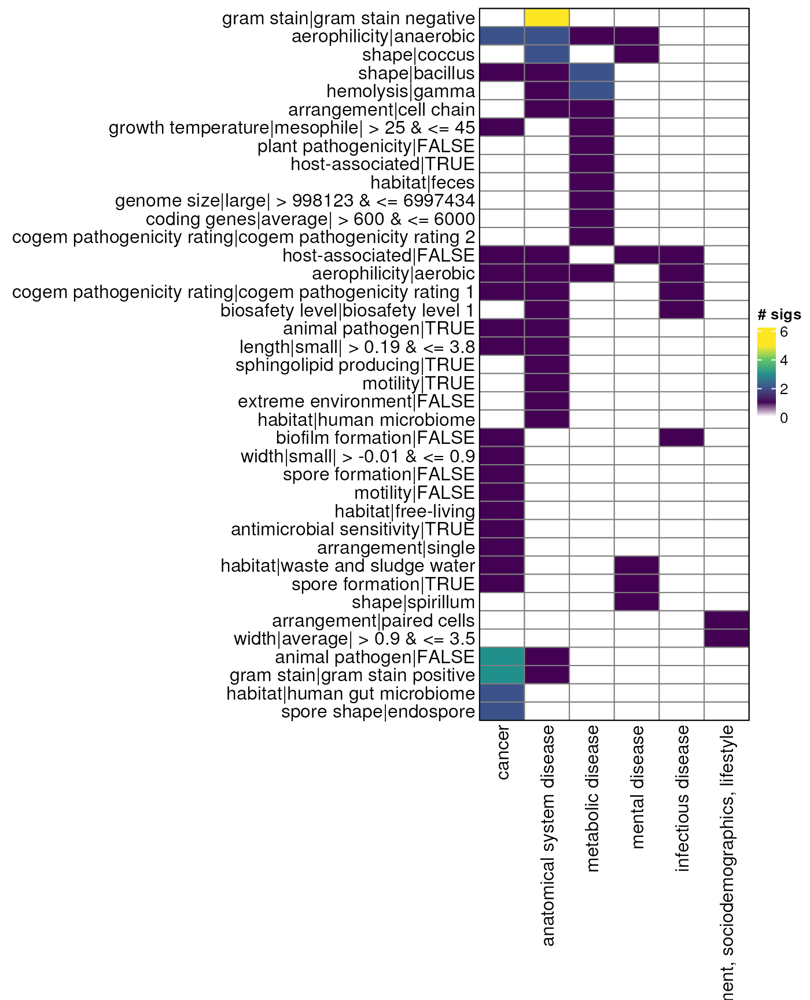

Odds Ratio - Up vs Down
Source:vignettes/articles/up_vs_down_metasignatures_nointersect.Rmd
up_vs_down_metasignatures_nointersect.Rmd
library(bugphyzzAnalyses)
library(bugphyzz)
library(bugsigdbr)
library(dplyr)
#>
#> Attaching package: 'dplyr'
#> The following objects are masked from 'package:stats':
#>
#> filter, lag
#> The following objects are masked from 'package:base':
#>
#> intersect, setdiff, setequal, union
library(purrr)
library(tidyr)
library(ComplexHeatmap)
#> Loading required package: grid
#> ========================================
#> ComplexHeatmap version 2.18.0
#> Bioconductor page: http://bioconductor.org/packages/ComplexHeatmap/
#> Github page: https://github.com/jokergoo/ComplexHeatmap
#> Documentation: http://jokergoo.github.io/ComplexHeatmap-reference
#>
#> If you use it in published research, please cite either one:
#> - Gu, Z. Complex Heatmap Visualization. iMeta 2022.
#> - Gu, Z. Complex heatmaps reveal patterns and correlations in multidimensional
#> genomic data. Bioinformatics 2016.
#>
#>
#> The new InteractiveComplexHeatmap package can directly export static
#> complex heatmaps into an interactive Shiny app with zero effort. Have a try!
#>
#> This message can be suppressed by:
#> suppressPackageStartupMessages(library(ComplexHeatmap))
#> ========================================Import BugPhyzz
bp <- importBugphyzz()
bp_sigs_gn <- map(bp, ~ {
makeSignatures(
dat = .x, tax_id_type = "NCBI_ID", tax_level = "genus", min_size = 5
)
}) |>
list_flatten(name_spec = "{inner}") |>
discard(is.null) |>
map(as.character)
bp_sigs_sp <- map(bp, ~ {
makeSignatures(
dat = .x, tax_id_type = "NCBI_ID", tax_level = "species", min_size = 5
)
}) |>
list_flatten(name_spec = "{inner}") |>
discard(is.null) |>
map(as.character)Import data
Use “case-control” study design only:
## 10.5281/zenodo.10407666 v1.2.0
## "10.5281/zenodo.6468009" v1.1.0
# bsdb <- importBugSigDB(version = "10.5281/zenodo.10407666" , cache = FALSE)
bsdb <- importBugSigDB(cache = FALSE)
# bsdb <- importBugSigDB(version = "devel" , cache = FALSE)
bsdb <- bsdb |>
filter(`Host species` == "Homo sapiens") |>
filter(!is.na(`Abundance in Group 1`)) |>
filter(!is.na(`Body site`)) |>
filter(`Study design` == "case-control" ) |>
mutate(
`BSDB ID` = paste0(
"bsdb:",
sub("Study ", "", Study), "/",
sub("Experiment ", "", Experiment), "/",
sub("Signature ", "", `Signature page name`)
)
) |>
mutate(
custom_id = paste0(
"bsdb:",
sub("Study ", "", Study), "/",
sub("Experiment ", "", Experiment)
)
) |>
relocate(custom_id, `BSDB ID`)
dim(bsdb)
#> [1] 1467 51Create a list with signature ids (BSDB ID) that have both UP and DOWN outcomes per study.
Genus signatures:
up_gn <- getMetaSignatures(
df = bsdb, column = "Condition", direction = "UP",
min.studies = 2, min.taxa = 5, tax.id.type = "ncbi",
tax.level = "genus", exact.tax.level = FALSE
) |>
discard(~ length(.x) < 5) |>
map(names)
down_gn <- getMetaSignatures(
df = bsdb, column = "Condition", direction = "DOWN",
min.studies = 2, min.taxa = 5, tax.id.type = "ncbi",
tax.level = "genus", exact.tax.level = FALSE
) |>
discard(~ length(.x) < 5) |>
map(names)
common_names_gn <- intersect(names(up_gn), names(down_gn))
up_gn <- up_gn[common_names_gn]
down_gn <- down_gn[common_names_gn]
remove_gn <- map2(up_gn, down_gn, ~ intersect(.x, .y))
up_gn <- map2(up_gn, remove_gn, ~ .x[!.x %in% .y])
down_gn <- map2(down_gn, remove_gn, ~ .x[!.x %in% .y])
up_gn <- discard(up_gn, ~ length(.x) < 5)
down_gn <- discard(down_gn,~ length(.x) < 5)
keep_names <- intersect(names(up_gn), names(down_gn))
up_gn <- up_gn[keep_names]
down_gn <- down_gn[keep_names]
# names(up_gn) <- paste0("genus_UP_", names(up_gn))
# names(down_gn) <- paste0("genus_DOWN_", names(down_gn))Species signatures:
up_sp <- getMetaSignatures(
df = bsdb, column = "Condition", direction = "UP",
min.studies = 2, min.taxa = 5, tax.id.type = "ncbi",
tax.level = "species", exact.tax.level = FALSE
) |>
discard(~ length(.x) < 5) |>
map(names)
down_sp <- getMetaSignatures(
df = bsdb, column = "Condition", direction = "DOWN",
min.studies = 2, min.taxa = 5, tax.id.type = "ncbi",
tax.level = "species", exact.tax.level = FALSE
) |>
discard(~ length(.x) < 5) |>
map(names)
common_names_sp <- intersect(names(up_sp), names(down_sp))
up_sp <- up_sp[common_names_sp]
down_sp <- down_sp[common_names_sp]
remove_sp <- map2(up_sp, down_sp, ~ intersect(.x, .y))
up_sp <- map2(up_sp, remove_sp, ~ .x[!.x %in% .y])
down_sp <- map2(down_sp, remove_sp, ~ .x[!.x %in% .y])
up_sp <- discard(up_sp, ~ length(.x) < 5)
down_sp <- discard(down_sp,~ length(.x) < 5)
keep_names <- intersect(names(up_sp), names(down_sp))
up_sp <- up_sp[keep_names]
down_sp <- down_sp[keep_names]
# names(up_sp) <- paste0("species_UP_", names(up_sp))
# names(down_sp) <- paste0("species_DOWN_", names(down_sp))
## Columns that make BSDB ID: Study, Experiment, Signature page name
# l <- bsdb |>
# select(
# Study, Experiment, `Signature page name`, `Abundance in Group 1`
# ) |>
# mutate(
# xcol = paste0(`Abundance in Group 1`, " (", `Signature page name`, ")")
# ) |>
# group_by(Study, Experiment) |>
# mutate(ycol = sort(paste0(xcol, collapse = "; "))) |>
# mutate(n_sig = n()) |>
# ungroup() |>
# select(-xcol) |>
# filter(n_sig == 2) |>
# filter(grepl("decreased", ycol), grepl("increased", ycol)) |>
# filter(grepl("Signature 1", ycol), grepl("Signature 2", ycol)) |>
# mutate(
# `BSDB ID` = paste0(
# "bsdb:",
# sub("Study ", "", Study), "/",
# sub("Experiment ", "", Experiment), "/",
# sub("Signature ", "", `Signature page name`)
# )
# ) |>
# mutate(
# custom_id = paste0(
# "bsdb:",
# sub("Study ", "", Study), "/",
# sub("Experiment ", "", Experiment)
# )
# ) |>
# relocate(custom_id, `BSDB ID`) |>
# {\(y) split(y, y$`Abundance in Group 1`)}() |>
# map(~ pull(arrange(.x, custom_id), `BSDB ID`))
# map(l, length)Genus
Create signatures for both decrease and increase at the genus level. Only keep the signature names (stored in a data.frame) that have enough taxa in both increased and decreased sets.
# lg <- map(l, ~ {
# bsdb |>
# filter(`BSDB ID` %in% .x) |>
# getSignatures(
# tax.id.type = "ncbi", tax.level = "genus", exact.tax.level = FALSE,
# min.size = 5
# ) |>
# keep(~ length(.x) >= 5)
# })
# df_gn_1 <- data.frame(
# x = paste0(
# sub("/\\d_.*", "", names(lg$decreased)), "-%-%-", names(lg$decreased)
# )
# ) |>
# separate(col = "x", into = c("custom_id", "sig_down"), sep = "-%-%-")
#
# df_gn_2 <- data.frame(
# x = paste0(
# sub("/\\d_.*", "", names(lg$increased)), "-%-%-", names(lg$increased)
# )
# ) |>
# separate(col = "x", into = c("custom_id", "sig_up"), sep = "-%-%-")
#
# df_gn <- full_join(df_gn_1, df_gn_2, by = "custom_id") |>
# drop_na() |>
# mutate(
# check = sub("bsdb:\\d+/\\d+/\\d+_(.*)_UP", "\\1", sig_up) ==
# sub("bsdb:\\d+/\\d+/\\d+_(.*)_DOWN", "\\1", sig_down)
# )
# dim(df_gn) Species
Create signatures for both decrease and increase at the species level. Only keep the signature names (stored in a data.frame) that have enough taxa in both increased and decreased sets.
# ls <- map(l, ~ {
# bsdb |>
# filter(`BSDB ID` %in% .x) |>
# getSignatures(
# tax.id.type = "ncbi", tax.level = "species",
# exact.tax.level = FALSE, min.size = 5
# ) |>
# keep(~ length(.x) >= 5)
# })
# df_sp_1 <- data.frame(
# x = paste0(
# sub("/\\d_.*", "", names(ls$decreased)), "-%-%-", names(ls$decreased)
# )
# ) |>
# separate(col = "x", into = c("custom_id", "sig_down"), sep = "-%-%-")
#
# df_sp_2 <- data.frame(
# x = paste0(
# sub("/\\d_.*", "", names(ls$increased)), "-%-%-", names(ls$increased)
# )
# ) |>
# separate(col = "x", into = c("custom_id", "sig_up"), sep = "-%-%-")
#
# df_sp <- full_join(df_sp_1, df_sp_2, by = "custom_id") |>
# drop_na() |>
# mutate(
# check = sub("bsdb:\\d+/\\d+/\\d+_(.*)_UP", "\\1", sig_up) ==
# sub("bsdb:\\d+/\\d+/\\d+_(.*)_DOWN", "\\1", sig_down)
# )
# dim(df_sp)Get lists of BSDB signatures
sigs_list_gn <- list()
sigs_list_gn[["up"]] <- up_gn
sigs_list_gn[["down"]] <- down_gn
# sigs_list_gn[["up"]] <- lg$increased[df_gn$sig_up]
# sigs_list_gn[["down"]] <- lg$decreased[df_gn$sig_down]
sigs_list_sp <- list()
sigs_list_sp[["up"]] <- up_sp
sigs_list_sp[["down"]] <- down_sp
# sigs_list_sp[["up"]] <- ls$increased[df_sp$sig_up]
# sigs_list_sp[["down"]] <- ls$decreased[df_sp$sig_down]Odds ratio - function
or <- function(x, y, s) {
a <- sum(x %in% s)
b <- sum(!x %in% s)
c <- sum(y %in% s)
d <- sum(!y %in% s)
ct <- matrix(
data = c(a, b, c, d), byrow = TRUE, nrow = 2, ncol = 2,
dimnames = list(exposure = c("yes", "no"), event = c("yes", "no"))
)
# suppressWarnings({
# res <- epitools::oddsratio.wald(ct)
# })
p_value = fisher.test(x = ct, alternative = "two.sided")$p.value
if (any(ct == 0)) {
HA <- "*"
suppressWarnings({
# res <- epitools::oddsratio.small(ct)
# p_value = fisher.test(x = ct + 0.5, alternative = "two.sided")$p.value
res <- epitools::oddsratio.wald(ct + 0.5) # I get a lot of caution messages about not using this funcion
})
} else {
HA <- ""
suppressWarnings({
# p_value = fisher.test(x = ct, alternative = "two.sided")$p.value
res <- epitools::oddsratio.wald(ct)
})
}
output <- data.frame(
odds_ratio = round(res$measure[2, "estimate"], 2),
lower_ci = round(res$measure[2, "lower"], 2),
upper_ci = round(res$measure[2, "upper"], 2),
# p_value = res$p.value[2, "fisher.exact"],
p_value = p_value,
# method = method,
HA = HA,
up_annotated = a,
up_noAnnotated = b,
down_annotated = c,
down_noAnnotated = d
)
return(output)
}Calculate odds ratio and p values
fname <- system.file(
'extdata', 'condition2category.tsv', package = 'bugphyzzAnalyses',
mustWork = TRUE
)
cond2cat <- read.table(fname, header = TRUE, sep = '\t')
gn <- vector("list", length(sigs_list_gn$up) * length(bp_sigs_gn))
counter <- 1
for (i in seq_along(sigs_list_gn$up)) {
for(j in seq_along(bp_sigs_gn)) {
odds_ratio <- or(
x = sigs_list_gn$up[[i]],
y = sigs_list_gn$down[[i]],
s = bp_sigs_gn[[j]]
)
names(gn)[counter] <- paste0(
names(sigs_list_gn$up)[i], "-%-%-", names(bp_sigs_gn)[j], "-%-%-genus"
)
gn[[counter]] <- odds_ratio
counter <- counter + 1
}
}
gn_df <- gn |>
bind_rows(.id = "name") |>
separate(
col = "name", into = c("condition", "bp_sig", "rank"), sep = "-%-%-"
) |>
mutate(
bp_sig = sub("^bugphyzz:(.*)$", "\\1", bp_sig)
) |>
arrange(-odds_ratio) |>
mutate(condition = tolower(condition)) |>
left_join(cond2cat, by = c("condition" = "Condition")) |>
filter(!is.na(Category))
dim(gn_df)
#> [1] 3350 13
sp <- vector("list", length(sigs_list_sp$up) * length(bp_sigs_sp))
counter <- 1
for (i in seq_along(sigs_list_sp$up)) {
for(j in seq_along(bp_sigs_sp)) {
odds_ratio <- or(
x = sigs_list_sp$up[[i]],
y = sigs_list_sp$down[[i]],
s = bp_sigs_sp[[j]]
)
names(sp)[counter] <- paste0(
names(sigs_list_sp$up)[i], "-%-%-", names(bp_sigs_sp)[j], "-%-%-genus"
)
sp[[counter]] <- odds_ratio
counter <- counter + 1
}
}
sp_df <- sp |>
bind_rows(.id = "name") |>
separate(
col = "name", into = c("condition", "bp_sig", "rank"), sep = "-%-%-"
) |>
mutate(
bp_sig = sub("^bugphyzz:(.*)$", "\\1", bp_sig)
) |>
arrange(-odds_ratio) |>
mutate(condition = tolower(condition)) |>
left_join(cond2cat, by = c("condition" = "Condition")) |>
filter(!is.na(Category))
dim(sp_df)
#> [1] 2958 13odds ratio - genus - table up
genus_table_up <- mainDF |>
filter(rank == "genus") |>
filter(p_value < 0.05, odds_ratio > 1) |>
arrange(-odds_ratio)
myDataTable(genus_table_up, 30)Odds ratio - genus - heatmap up
gn_mat_up <- genus_table_up |>
# filter(rank == "genus") |>
# filter(p_value < 0.05, odds_ratio > 1) |>
count(Category, bp_sig) |>
pivot_wider(
names_from = "Category", values_from = "n", values_fill = 0
) |>
tibble::column_to_rownames(var = "bp_sig") |>
as.matrix()
color_fun <- function(x) {
circlize::colorRamp2(
breaks = c(0, seq(1, max(x))),
colors = c("white", viridis::viridis(max(x)))
)
}
gn_hp_up <- Heatmap(
matrix = gn_mat_up,
col = color_fun(gn_mat_up),
border = TRUE,
show_row_dend = FALSE, show_column_dend = FALSE,
row_names_side = "left",
name = "# sigs",
rect_gp = gpar(col = "gray50", lwd = 1),
row_names_max_width = max_text_width(
rownames(gn_mat_up),
gp = gpar(fontsize = 12)
),
)
gn_hp_up
odds ratio - genus - table down
genus_table_down <- mainDF |>
filter(rank == "genus") |>
filter(p_value < 0.05, odds_ratio < 1) |>
arrange(-odds_ratio)
myDataTable(genus_table_down, 30)odds ratio - genus - heatmap down
gn_mat_down <- genus_table_down |>
# filter(rank == "genus") |>
filter(p_value < 0.05, odds_ratio < 1) |>
count(Category, bp_sig) |>
pivot_wider(
names_from = "Category", values_from = "n", values_fill = 0
) |>
tibble::column_to_rownames(var = "bp_sig") |>
as.matrix()
gn_hp_down <- Heatmap(
matrix = gn_mat_down,
col = color_fun(gn_mat_down),
border = TRUE,
show_row_dend = FALSE, show_column_dend = FALSE,
row_names_side = "left",
name = "# sigs",
rect_gp = gpar(col = "gray50", lwd = 1),
row_names_max_width = max_text_width(
rownames(gn_mat_down),
gp = gpar(fontsize = 12)
),
)
gn_hp_down
odds ratio - species - table up
species_table_up <- mainDF |>
filter(rank == "species") |>
filter(p_value < 0.05, odds_ratio > 1) |>
arrange(-odds_ratio)
myDataTable(species_table_up, 30)Odds ratio - species - heatmap up
sp_mat_up <- species_table_up |>
# filter(rank == "species") |>
filter(p_value < 0.05, odds_ratio > 1) |>
count(Category, bp_sig) |>
pivot_wider(
names_from = "Category", values_from = "n", values_fill = 0
) |>
tibble::column_to_rownames(var = "bp_sig") |>
as.matrix()
sp_hp_up <- Heatmap(
matrix = sp_mat_up,
col = color_fun(sp_mat_up),
border = TRUE,
show_row_dend = FALSE, show_column_dend = FALSE,
row_names_side = "left",
name = "# sigs",
rect_gp = gpar(col = "gray50", lwd = 1),
row_names_max_width = max_text_width(
rownames(sp_mat_up),
gp = gpar(fontsize = 12)
),
)
sp_hp_up
Odds ratio - species - table down
species_table_down <- mainDF |>
filter(rank == "species") |>
filter(p_value < 0.05, odds_ratio < 1) |>
arrange(-odds_ratio)
myDataTable(species_table_down, 30)Odds ratio - species - heatmap down
sp_mat_down <- species_table_down |>
# filter(rank == "species") |>
filter(p_value < 0.05, odds_ratio < 1) |>
count(Category, bp_sig) |>
pivot_wider(
names_from = "Category", values_from = "n", values_fill = 0
) |>
tibble::column_to_rownames(var = "bp_sig") |>
as.matrix()
sp_hp_down <- Heatmap(
matrix = sp_mat_down,
col = color_fun(sp_mat_down),
border = TRUE,
show_row_dend = FALSE, show_column_dend = FALSE,
row_names_side = "left",
name = "# sigs",
rect_gp = gpar(col = "gray50", lwd = 1),
row_names_max_width = max_text_width(
rownames(sp_mat_down),
gp = gpar(fontsize = 12)
),
)
sp_hp_down
Session information
sessioninfo::session_info()
#> ─ Session info ───────────────────────────────────────────────────────────────
#> setting value
#> version R version 4.3.2 (2023-10-31)
#> os Ubuntu 22.04.3 LTS
#> system x86_64, linux-gnu
#> ui X11
#> language en
#> collate en_US.UTF-8
#> ctype en_US.UTF-8
#> tz Etc/UTC
#> date 2024-02-27
#> pandoc 3.1.1 @ /usr/local/bin/ (via rmarkdown)
#>
#> ─ Packages ───────────────────────────────────────────────────────────────────
#> package * version date (UTC) lib source
#> BiocFileCache 2.10.1 2023-10-26 [1] Bioconductor
#> BiocGenerics 0.48.1 2023-11-01 [1] Bioconductor
#> bit 4.0.5 2022-11-15 [1] RSPM (R 4.3.0)
#> bit64 4.0.5 2020-08-30 [1] RSPM (R 4.3.0)
#> blob 1.2.4 2023-03-17 [1] RSPM (R 4.3.0)
#> bold 1.3.0 2023-05-02 [1] RSPM (R 4.3.0)
#> bslib 0.6.1 2023-11-28 [1] RSPM (R 4.3.0)
#> bugphyzz * 0.0.1.4 2024-02-27 [1] Github (waldronlab/bugphyzz@1339325)
#> bugphyzzAnalyses * 0.1.0 2024-02-27 [1] local
#> bugsigdbr * 1.8.4 2024-02-21 [1] Bioconductor 3.18 (R 4.3.2)
#> cachem 1.0.8 2023-05-01 [1] RSPM (R 4.3.0)
#> Cairo 1.6-2 2023-11-28 [1] RSPM (R 4.3.0)
#> circlize 0.4.16 2024-02-20 [1] RSPM (R 4.3.0)
#> cli 3.6.2 2023-12-11 [1] RSPM (R 4.3.0)
#> clue 0.3-65 2023-09-23 [1] RSPM (R 4.3.0)
#> cluster 2.1.4 2022-08-22 [2] CRAN (R 4.3.2)
#> codetools 0.2-19 2023-02-01 [2] CRAN (R 4.3.2)
#> colorspace 2.1-0 2023-01-23 [1] RSPM (R 4.3.0)
#> ComplexHeatmap * 2.18.0 2023-10-24 [1] Bioconductor
#> conditionz 0.1.0 2019-04-24 [1] RSPM (R 4.3.0)
#> crayon 1.5.2 2022-09-29 [1] RSPM (R 4.3.0)
#> crosstalk 1.2.1 2023-11-23 [1] RSPM (R 4.3.0)
#> crul 1.4.0 2023-05-17 [1] RSPM (R 4.3.0)
#> curl 5.2.0 2023-12-08 [1] RSPM (R 4.3.0)
#> data.table 1.15.0 2024-01-30 [1] RSPM (R 4.3.0)
#> DBI 1.2.2 2024-02-16 [1] RSPM (R 4.3.0)
#> dbplyr 2.4.0 2023-10-26 [1] RSPM (R 4.3.0)
#> desc 1.4.3 2023-12-10 [1] RSPM (R 4.3.0)
#> digest 0.6.34 2024-01-11 [1] RSPM (R 4.3.0)
#> doParallel 1.0.17 2022-02-07 [1] RSPM (R 4.3.0)
#> dplyr * 1.1.4 2023-11-17 [1] RSPM (R 4.3.0)
#> DT 0.32 2024-02-19 [1] RSPM (R 4.3.0)
#> ellipsis 0.3.2 2021-04-29 [1] RSPM (R 4.3.0)
#> epitools 0.5-10.1 2020-03-22 [1] RSPM (R 4.3.0)
#> evaluate 0.23 2023-11-01 [1] RSPM (R 4.3.0)
#> fansi 1.0.6 2023-12-08 [1] RSPM (R 4.3.0)
#> fastmap 1.1.1 2023-02-24 [1] RSPM (R 4.3.0)
#> filelock 1.0.3 2023-12-11 [1] RSPM (R 4.3.0)
#> foreach 1.5.2 2022-02-02 [1] RSPM (R 4.3.0)
#> fs 1.6.3 2023-07-20 [1] RSPM (R 4.3.0)
#> generics 0.1.3 2022-07-05 [1] RSPM (R 4.3.0)
#> GetoptLong 1.0.5 2020-12-15 [1] RSPM (R 4.3.0)
#> ggplot2 3.5.0 2024-02-23 [1] RSPM (R 4.3.0)
#> GlobalOptions 0.1.2 2020-06-10 [1] RSPM (R 4.3.0)
#> glue 1.7.0 2024-01-09 [1] RSPM (R 4.3.0)
#> gridExtra 2.3 2017-09-09 [1] RSPM (R 4.3.0)
#> gtable 0.3.4 2023-08-21 [1] RSPM (R 4.3.0)
#> highr 0.10 2022-12-22 [1] RSPM (R 4.3.0)
#> hoardr 0.5.4 2024-01-23 [1] RSPM (R 4.3.0)
#> htmltools 0.5.7 2023-11-03 [1] RSPM (R 4.3.0)
#> htmlwidgets 1.6.4 2023-12-06 [1] RSPM (R 4.3.0)
#> httpcode 0.3.0 2020-04-10 [1] RSPM (R 4.3.0)
#> httr 1.4.7 2023-08-15 [1] RSPM (R 4.3.0)
#> IRanges 2.36.0 2023-10-24 [1] Bioconductor
#> iterators 1.0.14 2022-02-05 [1] RSPM (R 4.3.0)
#> jquerylib 0.1.4 2021-04-26 [1] RSPM (R 4.3.0)
#> jsonlite 1.8.8 2023-12-04 [1] RSPM (R 4.3.0)
#> knitr 1.45 2023-10-30 [1] RSPM (R 4.3.0)
#> lifecycle 1.0.4 2023-11-07 [1] RSPM (R 4.3.0)
#> magrittr 2.0.3 2022-03-30 [1] RSPM (R 4.3.0)
#> matrixStats 1.2.0 2023-12-11 [1] RSPM (R 4.3.0)
#> memoise 2.0.1 2021-11-26 [1] RSPM (R 4.3.0)
#> munsell 0.5.0 2018-06-12 [1] RSPM (R 4.3.0)
#> pillar 1.9.0 2023-03-22 [1] RSPM (R 4.3.0)
#> pkgconfig 2.0.3 2019-09-22 [1] RSPM (R 4.3.0)
#> pkgdown 2.0.7 2022-12-14 [1] RSPM (R 4.3.0)
#> png 0.1-8 2022-11-29 [1] RSPM (R 4.3.0)
#> purrr * 1.0.2 2023-08-10 [1] RSPM (R 4.3.0)
#> R6 2.5.1 2021-08-19 [1] RSPM (R 4.3.0)
#> ragg 1.2.7 2023-12-11 [1] RSPM (R 4.3.0)
#> rappdirs 0.3.3 2021-01-31 [1] RSPM (R 4.3.0)
#> RColorBrewer 1.1-3 2022-04-03 [1] RSPM (R 4.3.0)
#> rjson 0.2.21 2022-01-09 [1] RSPM (R 4.3.0)
#> rlang 1.1.3 2024-01-10 [1] RSPM (R 4.3.0)
#> rmarkdown 2.25 2023-09-18 [1] RSPM (R 4.3.0)
#> RSQLite 2.3.5 2024-01-21 [1] RSPM (R 4.3.0)
#> S4Vectors 0.40.2 2023-11-23 [1] Bioconductor 3.18 (R 4.3.2)
#> sass 0.4.8 2023-12-06 [1] RSPM (R 4.3.0)
#> scales 1.3.0 2023-11-28 [1] RSPM (R 4.3.0)
#> sessioninfo 1.2.2 2021-12-06 [1] RSPM (R 4.3.0)
#> shape 1.4.6.1 2024-02-23 [1] RSPM (R 4.3.0)
#> stringi 1.8.3 2023-12-11 [1] RSPM (R 4.3.0)
#> stringr 1.5.1 2023-11-14 [1] RSPM (R 4.3.0)
#> systemfonts 1.0.5 2023-10-09 [1] RSPM (R 4.3.0)
#> taxa 0.4.3 2024-02-20 [1] RSPM (R 4.3.0)
#> taxize 1.0 2024-02-27 [1] Github (ropensci/taxize@bcff2a6)
#> taxizedb 0.3.1 2023-04-03 [1] RSPM (R 4.3.0)
#> textshaping 0.3.7 2023-10-09 [1] RSPM (R 4.3.0)
#> tibble 3.2.1 2023-03-20 [1] RSPM (R 4.3.0)
#> tidyr * 1.3.1 2024-01-24 [1] RSPM (R 4.3.0)
#> tidyselect 1.2.0 2022-10-10 [1] RSPM (R 4.3.0)
#> utf8 1.2.4 2023-10-22 [1] RSPM (R 4.3.0)
#> uuid 1.2-0 2024-01-14 [1] RSPM (R 4.3.0)
#> vctrs 0.6.5 2023-12-01 [1] RSPM (R 4.3.0)
#> viridis 0.6.5 2024-01-29 [1] RSPM (R 4.3.0)
#> viridisLite 0.4.2 2023-05-02 [1] RSPM (R 4.3.0)
#> withr 3.0.0 2024-01-16 [1] RSPM (R 4.3.0)
#> xfun 0.42 2024-02-08 [1] RSPM (R 4.3.0)
#> xml2 1.3.6 2023-12-04 [1] RSPM (R 4.3.0)
#> yaml 2.3.8 2023-12-11 [1] RSPM (R 4.3.0)
#>
#> [1] /usr/local/lib/R/site-library
#> [2] /usr/local/lib/R/library
#>
#> ──────────────────────────────────────────────────────────────────────────────